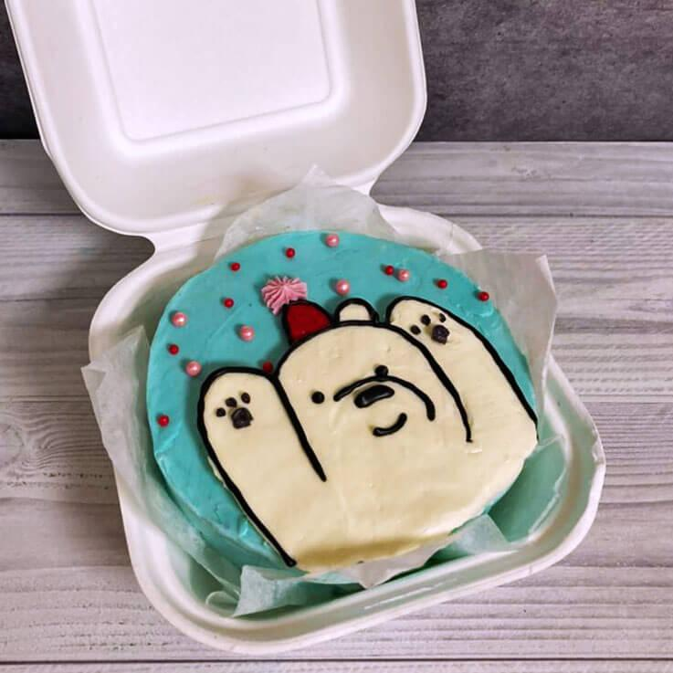

Приветствую вас на своем первом проекте! Думаю вам очень интересно узнать, что такое бенто-торт, что в нем особенного и что нужно для принготовления маленького чуда, но все по порядку! И начнем мы с описания...
Бенто-торты - это мини тортики весом 400-500 гр и размером примерно 9-10 см в диаметре и 6-8 см в высоту. Такого тортика хватит на 1-3 человек, в зависимости от того, хочет получатель поделиться таким тортиком с кем-то или мечтает хотя бы один раз в жизни съесть торт сам.
Эти тортики характеризуются различными картинками, надписями и легкой небрежностью. Такие тортики обычно упаковываются в ланч бокс из сахарного тростника, а в комплекте часто прикладываются деревянные ложечки и праздничные свечки.
Сама идея бенто-тортов пришла к нам из Кореи, при том, что «бенто» – это японский термин. Японцы называют так однопорционную упакованную в коробку с крышкой еду. И если в поисковке наберете слово “Бенто”, то в картинках вам будут показаны не бенто торты, а как раз порционные контейнеры с едой.
Мини-десерт хорош тем, что вам не понадобится заказывать большой торт, тратить на это приличную сумму, если вы не планируете огромную вечеринку, а хотите посидеть в тесном кругу.

Выше можно наблюдать то, насколько Бенто-Торты могут быть уникальны в оформлении.Бенто выдерживает многие стили, начиная с забавных надписей, и, заканчивая поздравлениями. Бенто-Торт - это отличный подарок в любое время, любому другу!
Предлагаю тоже сделать простой бенто-торт!
Ингредиенты:
- Пшеничная мука: 140 гр
- Яйца: 5 шт.
- Сахар: 150 гр
- Сливочное масло: 20 гр
- Молоко: 20 мл
- Разрыхлитель: 10 гр
- Ванилин: по вкусу
- Соль (щепотка): по вкусу
Все Ингредиенты должны быть комнатной температуры.
- Разбиваем яйца и взбиваем их
- Добавляем молоко(желательно тёплое)
- Добавляем сахар и разрыхлитель, перемешиваем
- Топим масло и добавляем, после перемешиваем
- Добавляем ванилин и соль по вкусу
- Порционно добавляем муку и тщательно перемешиваем
Когда тесто готово выливаем его на противень, на котором должна быть пергаментная бумага.
Ставим тесто в предварительно разогретую духовку на 15 минут 180°С.
Когда коржи приготовилось вырезаем определёную форму(чаще всего коржи для бенто-тортов круглые)
Приготовление конфитюра!
Ингредиенты:
- Клубника: 75 гр
- Сахар: 30 гр
- Вода: 1 чайн.л
- Кукурузный крахмал: 1 чайн.л.
Смешайте все ингредиенты. Поставьте сотейник на небольшой огонь и проварите содержимое до загустения. Помешивайте конфитюр во время варки, затем вылейте в пиалу и остудите. Если вы готовите начинку заранее, то накройте ее пищевой пленкой "в контакт", чтобы на конфитюре не образовалась пленочка.
Приготовление крема!
Ингредиенты:
- Творог 340 г;
- Масло сливочное 180 г;
- Сахарная пудра (на свой вкус).
Творог протираем через сито.Масло комнатной температуры взбиваем в пену.Добавляем в масло сахарную пудру и взбиваем еще несколько минут.Добавляем творог, а после взбиваем до однородности
На каждый корж наносим конфитюр и крем(предварительно коржи можно пропитать сливками или сгущёнкой смешанной с водой)
После того как будущий бенто-торт собран осталось его выровнять, с помощью приготтвленого крема. После выравнивания при желании можно окрасить остатки крема и с помощью кондитерского мешка нанести надпись/рисунок. Оставьте бенто-торт на пропитку в холодильнике на пару часов, срок хранения торта 72 часа